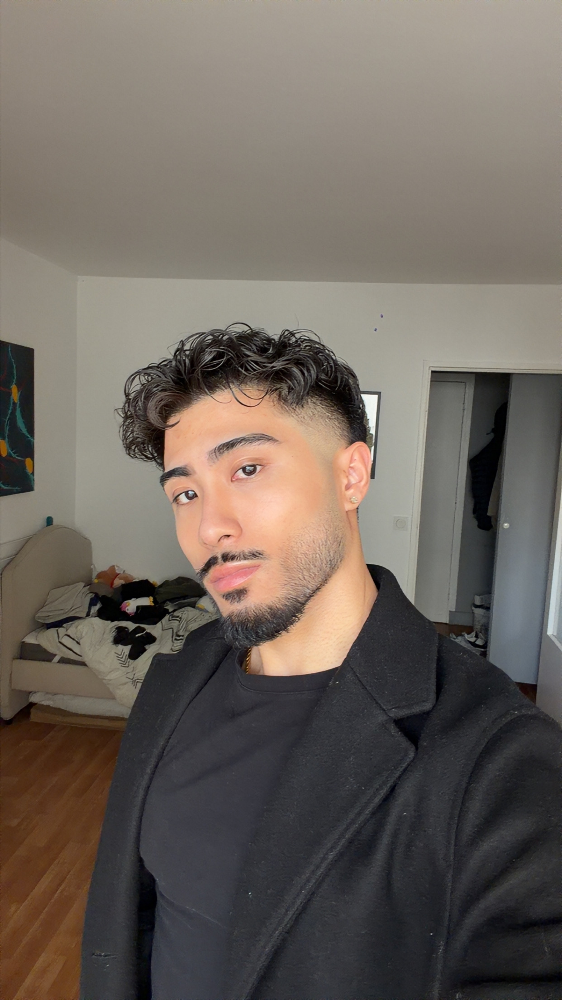

maxvu0 [at] outlook [dot] com
I am a Data Science Intern at Agence79 and graduate student at the University of Washington studying Computational Linguistics. My primary research interest is in Automatic Speech Recognition for low-resource languages and code switching.
I completed my B.A. at the UW in Linguistics with a minor in Data Science in June 2025. After, I moved to Madrid for one year to teach English with NALCAP, and I am currently based in Paris.
I'm interested in the intersection of linguistics and data science. I speak English and Spanish, and I study Arabic and French in my free time.